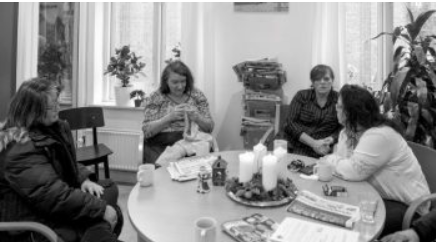

Er du familiemedlem eller en anden person, der står den sindslidende nær, og har du lyst til at mødes med andre pårørende?
Vi etablerer løbende grupper for pårørende, hvor man mødes anonymt ca. ti gange og deler udfordringer og erfaringer.
Du kan kontakte vores koordinator, hvis du vil vide mere.
Navn: Torben Haagerup
Nummer: 22 96 28 82